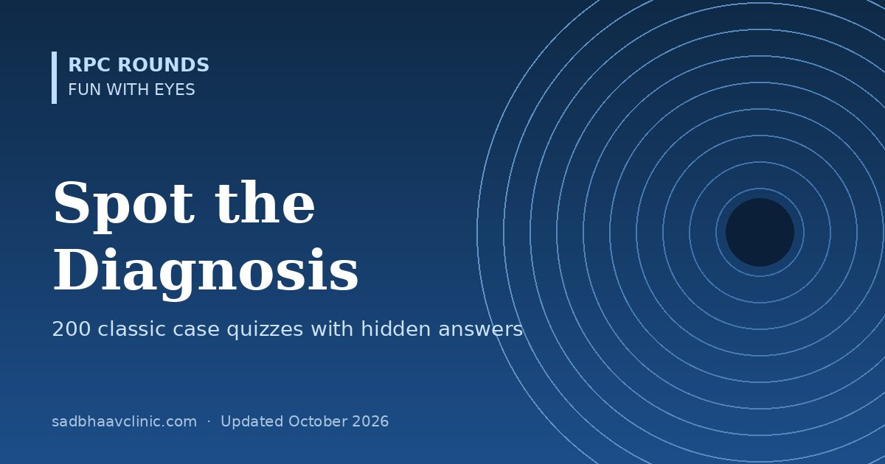

Last updated: October 2026
Two hundred short clinical cases, each built around the "giveaway" clue examiners love, across every subspecialty. Read the case, commit to a diagnosis, then reveal the answer to see which clue should have clinched it.
How to use: pick a subspecialty or shuffle them all, say your diagnosis and reasoning out loud as you would in a viva, then mark yourself. Come back for the case of the day, or revise only the ones you missed.
Jump to: Cornea & external · Lens & cataract · Glaucoma · Retina · Uvea & sclera · Neuro-ophthalmology · Paediatrics & strabismus · Oculoplasty & orbit · Trauma & emergencies · Systemic & oncology
Revealed 0 of 200
After you reveal an answer, mark whether you got it. Your score is saved on this device only.
No cases match this filter yet.
A soft contact lens wearer who rinses lenses with tap water has severe eye pain that seems out of proportion to the modest corneal findings. There is a ring-shaped stromal infiltrate and the corneal nerves look thickened.
Acanthamoeba keratitis. Pain out of proportion, a ring infiltrate and radial perineuritis are the clues. Tap water exposure is the classic risk factor. See microbial keratitis.
A teenager's spectacles need changing every few months because of rising, irregular astigmatism. When he looks down, the lower lid bulges in a V shape. Fine vertical lines are visible in the posterior corneal stroma.
Keratoconus. Munson sign and Vogt striae. Get a tomography scan and consider corneal cross-linking if it is progressing. See keratoconus and topography tips.
A 45-year-old has a painful red eye with a branching corneal ulcer that stains with fluorescein and has terminal bulbs. Corneal sensation is reduced. He was given steroid drops elsewhere last week.
Herpes simplex epithelial (dendritic) keratitis. Terminal bulbs and reduced sensation separate HSV dendrites from the pseudodendrites of zoster or Acanthamoeba. Stop the steroid and start oral or topical antivirals. See dendritic ulcers.
An elderly man has a vesicular rash over the forehead and the tip of the nose, with a red eye and reduced corneal sensation.
Herpes zoster ophthalmicus (Hutchinson sign). Vesicles on the tip of the nose mean the nasociliary branch is involved, so eye involvement is likely. Start oral antivirals within 72 hours. See herpetic eye disease.
A farmer was hit in the eye by a plant stalk 10 days ago. He has a dry-looking grey infiltrate with feathery edges, satellite lesions and an endothelial plaque.
Fungal (filamentous) keratitis. Vegetative trauma, feathery margins and satellite lesions point to Fusarium or Aspergillus. Scrape for KOH and culture; start natamycin 5%. See fortified drops and antifungals and microbial keratitis.
An extended-wear soft contact lens user wakes with a very painful eye. There is a large central ulcer with a ground-glass surrounding cornea, thick mucopurulent discharge and a hypopyon, getting worse by the hour.
Pseudomonas keratitis. Rapid progression with a ring of stromal haze in a contact lens wearer is Pseudomonas until proven otherwise. Scrape, then start fortified or fluoroquinolone drops hourly. See microbial keratitis.
A 12-year-old boy has severe itching every spring. Upper lid eversion shows giant cobblestone papillae, and there is a shield-shaped ulcer on the upper cornea.
Vernal keratoconjunctivitis with a shield ulcer. Giant tarsal papillae in a young boy with seasonal itching; the shield ulcer forms from mechanical and toxic damage by the papillae. Treat aggressively with steroids or ciclosporin and remove the plaque. See red eye guide.
A young man has gelatinous nodules at the limbus with white dots on their surface, in a hot dry climate with marked itching.
Limbal vernal keratoconjunctivitis (Horner–Trantas dots). Trantas dots are collections of eosinophils and epithelial cells at the limbus in VKC. See red eye guide.
A newborn develops profuse purulent discharge and lid swelling on day 2 of life.
Gonococcal ophthalmia neonatorum. Discharge in the first 2–4 days with hyperacute pus suggests gonococcus, which can perforate the cornea. Gram stain, culture and systemic ceftriaxone. See red eye and conjunctivitis.
A 3-week-old baby has a sticky eye with moderate discharge. The mother had untreated vaginal discharge in pregnancy.
Chlamydial ophthalmia neonatorum. Onset at 5–14 days points to chlamydia. Treat with oral erythromycin, which also covers the risk of chlamydial pneumonia. See conjunctivitis.
Several family members have bilateral watery red eyes after one had a sore throat and fever. Two weeks later, small round white subepithelial spots appear in the central cornea and vision is mildly blurred.
Adenoviral epidemic keratoconjunctivitis with subepithelial infiltrates. Preauricular nodes, a contact history and later nummular subepithelial infiltrates are classic. Strict hygiene; mild steroids only if the infiltrates reduce vision. See conjunctivitis and returning to school or work.
A villager from a dry area has scarring of the upper tarsal conjunctiva in a horizontal line, small depressions at the upper limbus and in-turned lashes.
Trachoma (Arlt line, Herbert pits, trichiasis). Herbert pits are scarred limbal follicles, unique to trachoma. The WHO SAFE strategy covers surgery, antibiotics, face washing and environment. See red eye and conjunctivitis.
A young adult with acne rosacea has recurrent red eyes, telangiectatic lid margins and a peripheral vascularised wedge of corneal infiltrate.
Rosacea keratitis (blepharokeratoconjunctivitis). Meibomian disease plus marginal vascularised infiltrates; treat lids and give oral doxycycline (azithromycin in children). See dry eye and blepharitis treatment.
A child has a small raised white nodule at the limbus with a leash of vessels running to it, and severe photophobia. The child has a chronic cough.
Phlyctenular keratoconjunctivitis. A hypersensitivity reaction to staphylococcal or tubercular antigens; in endemic areas check for TB. Topical steroids settle it quickly. See red eye guide.
A 60-year-old with rheumatoid arthritis has a painful red eye and a crescent-shaped peripheral corneal ulcer with stromal melting next to the limbus.
Peripheral ulcerative keratitis. PUK in a patient with systemic vasculitis is a sign of active, potentially life-threatening disease and needs systemic immunosuppression, not just drops. See cornea hub.
An elderly man has a very painful, progressive peripheral corneal ulcer with an overhanging edge, starting at the limbus and spreading round. No systemic disease is found.
Mooren ulcer. A diagnosis of exclusion: idiopathic, painful peripheral ulcerative keratitis with an undermined leading edge. See cornea hub.
A man presents with a band of grey-white calcium across the interpalpebral cornea, with clear holes in it. He has long-standing chronic uveitis.
Band keratopathy. Calcium in Bowman layer with 'Swiss cheese' holes where nerves pass. Causes: chronic uveitis (JIA), hypercalcaemia, renal failure, silicone oil. Remove with EDTA chelation. See lines and rings in the eye.
A patient on long-term amiodarone has fine golden-brown whorl-like lines in the inferior corneal epithelium but normal vision.
Vortex keratopathy (cornea verticillata). Usually harmless; also seen with chloroquine and in Fabry disease. Amiodarone can also rarely cause optic neuropathy, which matters more. See ocular side effects of drugs.
A young man with liver disease and a tremor has a golden-brown ring at the edge of the cornea, best seen on gonioscopy.
Kayser–Fleischer ring (Wilson disease). Copper deposits in peripheral Descemet membrane. Look also for a sunflower cataract. See lines and rings.
A 65-year-old has a fleshy, gelatinous, vascularised mass at the limbus with leukoplakia on its surface and feeder vessels. It has grown over months.
Ocular surface squamous neoplasia. OSSN is more common with HIV, UV exposure and in older people. Excise with the no-touch technique plus cryotherapy, or treat with topical chemotherapy. See ocular tumours.
A woman wakes with sharp pain and watering in one eye on opening it, several times a month. Months ago a child's fingernail scratched that eye.
Recurrent corneal erosion syndrome. Classic morning pain after previous trauma or basement membrane dystrophy. Lubricating ointment at night; stromal puncture or PTK if it keeps recurring. See corneal dystrophies made easy.
A woman with a dry mouth and joint pains has gritty eyes, a Schirmer test of 3 mm in 5 minutes and filamentary keratitis.
Sjögren syndrome (aqueous-deficient dry eye). Check anti-Ro and anti-La antibodies and refer to rheumatology; Sjögren carries a raised lymphoma risk. See dry eye (TFOS DEWS III).
An elderly woman has scarred conjunctiva, a shortened inferior fornix and bands joining the lid to the globe. She also has mouth ulcers.
Ocular mucous membrane pemphigoid. Progressive cicatrising conjunctivitis with symblepharon; biopsy for linear basement membrane immunofluorescence. Needs systemic immunosuppression. See cornea hub.
A young man had a cold-like illness, then took a new antibiotic. He now has target skin lesions, blistering mouth ulcers and severe bilateral conjunctivitis with membranes.
Stevens–Johnson syndrome / toxic epidermal necrolysis. Acute ocular care (lubrication, steroid, amniotic membrane) prevents lifelong cicatricial complications. Stop the offending drug. See drug reactions in the eye.
A 30-year-old with myopia had LASIK 4 years ago. Vision has been blurring for months, with rising astigmatism and inferior steepening on topography.
Post-LASIK corneal ectasia. Risk factors include a thin residual stromal bed, high percentage tissue altered and undetected keratoconus. Corneal cross-linking can halt progression. See refractive surgery for residents and keratoconus.
Day 3 after an uneventful cataract operation, the patient returns with increasing pain, worse vision, a 1.5 mm hypopyon, and no red reflex.
Acute post-operative endophthalmitis. Pain plus reduced vision plus hypopyon after surgery needs an urgent tap and intravitreal antibiotics. See emergencies on call.
A tall, thin 16-year-old with long fingers needs frequent spectacle changes. Both lenses are displaced upwards and outwards, and the zonules can be seen stretched but intact.
Marfan syndrome with ectopia lentis. Superotemporal subluxation with intact zonules is typical. Check the heart (aortic root) and refer to cardiology. See lens hub.
A child with learning difficulties and fair hair has lenses displaced downwards. He had a deep vein thrombosis last year.
Homocystinuria. Inferonasal subluxation with broken zonules and a thrombosis risk, which matters for general anaesthesia. Check plasma homocysteine. See lens hub.
A short man with short fingers and stiff joints has small, round lenses. Dilating the pupil caused an acute rise in pressure.
Weill–Marchesani syndrome (microspherophakia). Small spherical lenses cause pupil block; miotics paradoxically make it worse. Treat with a peripheral iridotomy or lens removal. See lens hub.
A young adult with poorly controlled type 1 diabetes developed bilateral cataracts over a few weeks, with white flake-like opacities just under the capsule.
Snowflake (true diabetic) cataract. Rapid bilateral subcapsular snowflake opacities in young people with high blood sugar, from sorbitol accumulation. See lens hub.
A man has a cataract that looks like a sunflower in the anterior capsule. He has liver disease.
Sunflower cataract (Wilson disease or a copper foreign body). Copper deposits under the anterior capsule; look for a Kayser–Fleischer ring. A copper intraocular foreign body (chalcosis) gives the same picture. See lines and rings.
A 70-year-old's reading vision has improved without glasses over the past year, though distance vision is worse. He is delighted.
Nuclear sclerotic cataract (second sight / index myopia). Increasing refractive index of the hardening nucleus produces a myopic shift. See cataract surgery FAQ.
A patient on long-term oral steroids for asthma has glare when driving at night and difficulty reading. Near vision is affected more than expected for the degree of opacity.
Posterior subcapsular cataract. Steroids, diabetes, radiation and uveitis cause PSC; it affects near vision and glare badly because it sits near the nodal point. See cataract surgery FAQ.
An old man with a mature white cataract has a sudden painful red eye with high pressure. The anterior chamber is deep and full of white floating particles.
Phacolytic glaucoma. Lens proteins leaking through an intact capsule block the trabecular meshwork. The angle is open, so the treatment is cataract extraction. See glaucoma hub.
An old woman with an intumescent cataract has a painful red eye, IOP 48 mmHg and a very shallow anterior chamber in that eye only. The other eye's chamber is deep.
Phacomorphic glaucoma. A swollen lens pushes the iris forward and closes the angle. The asymmetry of chamber depth tells you the lens is the cause. Lower IOP, then remove the lens. See angle closure.
A glassblower has a thin sheet of the anterior lens capsule curling up and floating in the anterior chamber.
True exfoliation of the lens capsule. Infrared exposure splits the capsule (glassblower's cataract). Not to be confused with pseudoexfoliation, which is a deposit. See pseudoexfoliation.
A 72-year-old has white dandruff-like flakes on the pupil margin and a target pattern on the anterior capsule. The pupil dilates poorly and the lens trembles slightly.
Pseudoexfoliation syndrome. Weak zonules and a small pupil raise the risk of complications during cataract surgery. It also causes a secondary open-angle glaucoma. See pseudoexfoliation and cataract surgery in PXF.
Six weeks after an uncomplicated cataract operation, vision drops. The fluorescein angiogram shows a petaloid pattern of leakage at the macula and late disc staining.
Pseudophakic cystoid macular oedema (Irvine–Gass). Peaks at 4–6 weeks. Treat with topical NSAID plus steroid; diabetics and uveitis patients are at higher risk. See cataract surgery FAQ.
Two days after cataract surgery, the cornea is diffusely hazy from limbus to limbus with a mild anterior chamber reaction, but there is little pain and no vitreous involvement.
Toxic anterior segment syndrome (TASS). Onset within 12–48 hours, limbus-to-limbus oedema and no vitritis distinguish TASS from infection. Cause: contaminated solutions or instruments. Treat with intensive topical steroid. See endophthalmitis guide.
Six weeks after cataract surgery, a patient has low-grade inflammation that responds to steroids but keeps coming back. A white plaque is seen on the posterior capsule.
Chronic (delayed) endophthalmitis from Cutibacterium acnes. A capsular plaque with recurrent inflammation; the organism hides in the capsular bag. Treatment may need IOL and capsule removal. See endophthalmitis guide.
A 25-year-old myopic man notices blurring and haloes after playing basketball. There is a vertical band of pigment on the corneal endothelium and spoke-like iris transillumination defects in the mid-periphery.
Pigment dispersion syndrome. Krukenberg spindle, radial mid-peripheral transillumination defects and exercise-induced pigment release are classic. See pigment dispersion.
A 60-year-old woman has severe eye pain, nausea and vomiting, haloes round lights and a red eye. The pupil is mid-dilated and fixed, the cornea hazy and the eye feels rock hard.
Acute primary angle-closure. Lower the IOP (acetazolamide, topical drops, mannitol if needed), then laser iridotomy to both eyes. See angle closure.
A 45-year-old asymptomatic man at a routine check has IOP 26 mmHg in both eyes, open angles, a cup-to-disc ratio of 0.8 with an inferior notch and a superior arcuate field defect.
Primary open-angle glaucoma. Usually silent; matched disc and field damage confirms it. Set a target IOP and start treatment. See glaucoma hub and target IOP.
A 65-year-old woman with migraine and cold hands has a typical glaucomatous cup and field loss, but IOP has never been above 18 mmHg on diurnal testing.
Normal-tension glaucoma. Exclude compressive lesions if the picture is atypical. Lowering IOP by 30% still slows progression (CNTGS). See normal-tension glaucoma.
A man had a central retinal vein occlusion 3 months ago. Now he has a painful red eye, IOP 50 mmHg and new vessels on the iris and in the angle.
Neovascular glaucoma. The '90-day glaucoma' after ischaemic CRVO. Anti-VEGF injection, PRP and IOP control, often surgery. See glaucoma hub.
A middle-aged woman has unilateral glaucoma, an irregular pupil drawn to one side, holes in the iris, and a beaten-metal look to the corneal endothelium.
Iridocorneal endothelial (ICE) syndrome. Unilateral, in middle-aged women; abnormal endothelium migrates over the angle and iris. Variants: Chandler, essential iris atrophy, Cogan–Reese. See glaucoma hub.
A middle-aged man has recurrent attacks of mildly blurred vision and haloes in one eye, with IOP of 50 mmHg, a few fine keratic precipitates, an open angle and a quiet eye between attacks.
Posner–Schlossman syndrome (glaucomatocyclitic crisis). Often linked to CMV in the anterior chamber. Treat with topical steroid and IOP-lowering drugs; consider aqueous PCR. See uveitis.
A 6-month-old baby has watering, light sensitivity and large hazy corneas. There are horizontal curved lines in Descemet membrane.
Primary congenital glaucoma (Haab striae). The triad of epiphora, photophobia and blepharospasm with buphthalmos. Surgery (goniotomy or trabeculotomy) is the main treatment. See congenital glaucoma.
Three weeks after a trabeculectomy, the patient has a very shallow anterior chamber, IOP of 4 mmHg and a high bleb.
Overfiltration with a shallow chamber. Low IOP with a big bleb means too much flow. Check for a wound leak with Seidel testing; consider choroidal detachment. See bleb grading and hypotony.
After trabeculectomy, the anterior chamber is flat with high IOP, the bleb is flat, and an iridotomy is patent. B-scan shows no choroidal detachment.
Aqueous misdirection (malignant glaucoma). Aqueous flows backwards into the vitreous, pushing the lens–iris diaphragm forward. Atropine, aqueous suppressants, and YAG hyaloidotomy or vitrectomy. See bleb complications.
A boxer has raised IOP in one eye years after an injury. Gonioscopy shows a wide, irregular ciliary body band in that eye compared with the other.
Angle-recession glaucoma. Torn ciliary muscle after blunt trauma; risk is greater when more than 180° is recessed. Monitor for life. See ocular trauma.
A child with a port-wine stain over the forehead and upper lid on one side has raised IOP and a larger cornea on the same side.
Sturge–Weber syndrome. Raised episcleral venous pressure and angle anomalies cause glaucoma. Choroidal haemangioma gives a 'tomato ketchup' fundus. See glaucoma hub.
A woman has prominent red eyes with tortuous corkscrew episcleral vessels and a raised IOP, after a head injury. She hears a whooshing noise.
Carotid–cavernous fistula. Arterialised episcleral veins, chemosis, proptosis, raised episcleral venous pressure and a bruit. High-flow fistulas follow trauma. See neuro-ophthalmology hub.
A long-sighted 55-year-old has IOP of 30 mmHg in one eye after dilation for a fundus check. Gonioscopy shows a flat iris plane but the angle closes; a patent iridotomy does not open it.
Plateau iris configuration. Anteriorly placed ciliary processes push the peripheral iris into the angle. Ultrasound biomicroscopy confirms; treat with laser iridoplasty or lens extraction. See angle closure.
A patient using a steroid–antibiotic drop for 6 weeks after pterygium surgery has an IOP of 38 mmHg.
Steroid-induced ocular hypertension. Typical onset 2–6 weeks; dexamethasone and prednisolone are the worst culprits. Stop or switch to a weaker steroid; treat the IOP. See steroid regimens.
A 50-year-old with an optic disc haemorrhage on the inferotemporal rim and a corresponding nerve fibre layer defect has an IOP of 16 mmHg.
Glaucoma with a disc (Drance) haemorrhage. A disc haemorrhage is a strong sign of progression, especially in normal-tension glaucoma. See disc haemorrhage in glaucoma.
A man with diabetes started topiramate for migraine 5 days ago. Both eyes are painful, blurred and myopic, with IOP 40 mmHg and shallow anterior chambers.
Drug-induced bilateral angle closure (ciliochoroidal effusion). Topiramate and sulfa drugs cause ciliary body swelling. Iridotomy does not help; stop the drug, use cycloplegics and aqueous suppressants. See drug reactions in the eye.
A 6-year-old has bilateral raised IOP and a prominent white ring just inside the limbus. The iris has strands attached to it, and the pupil is displaced.
Axenfeld–Rieger syndrome. Posterior embryotoxon with iris strands, a neural crest disorder. Look for dental and umbilical anomalies; about half develop glaucoma. See eye embryology made easy.
Hours after an uneventful cataract operation with a lot of viscoelastic, the patient has a painful eye and IOP of 45 mmHg with a deep, quiet chamber.
Retained viscoelastic causing an IOP spike. Common in the first 24 hours. Release some aqueous through the paracentesis and give aqueous suppressants. See cataract surgery FAQ.
A patient with long-standing glaucoma treated with one eye drop now has longer, thicker and darker lashes, a darker iris, and sunken-looking upper lids.
Prostaglandin analogue side effects. Hypertrichosis, iris pigmentation and periorbital fat atrophy (prostaglandin-associated periorbitopathy). Iris darkening is permanent. See glaucoma medications chart.
A 28-year-old high myope has had flashes and a shower of new floaters for 2 days. On slit-lamp examination, pigment granules are seen floating in the anterior vitreous.
Retinal tear / rhegmatogenous retinal detachment. Pigment in the anterior vitreous ("tobacco dust", Shafer sign) strongly suggests a retinal break. Do a full indented peripheral examination.
A 68-year-old with atrial fibrillation has sudden painless loss of vision in one eye to counting fingers. The retina is pale and the fovea is bright red. Blood columns in the arterioles appear segmented.
Central retinal artery occlusion. The cherry-red spot appears because the fovea has no inner retina to whiten, so the choroid shows through. Segmented blood columns are "box-carring". Refer urgently through the stroke pathway.
A 38-year-old stressed executive, recently using a steroid nasal spray, notices central blur and straight lines looking bent. OCT shows a dome of subretinal fluid and a thick choroid.
Central serous chorioretinopathy. Stress and corticosteroid exposure (from any route) are the key risk factors. On angiography, look for an "ink-blot" or "smokestack" leak. See CSCR.
A patient with a long-standing type 2 diabetes reports a sudden shower of red-tinged floaters and dense loss of vision on waking. The fundus cannot be seen; the other eye shows new vessels on the disc.
Vitreous haemorrhage from proliferative diabetic retinopathy. Perform B-scan ultrasound to exclude a retinal detachment underneath, and treat the fellow eye's PDR.
A 70-year-old has sudden distortion in one eye. The macula shows a grey-green lesion with subretinal blood and fluid on OCT above the RPE.
Neovascular (wet) age-related macular degeneration. Treat promptly with intravitreal anti-VEGF; delay costs vision. See AMD and treat-and-extend.
A 60-year-old Asian woman has recurrent serosanguineous macular detachments. ICG angiography shows orange-red nodules at the edge of a branching vascular network.
Polypoidal choroidal vasculopathy. Polyps on ICG are diagnostic. Treat with anti-VEGF, with or without photodynamic therapy (EVEREST II). See ICG angiography and AMD.
A man has sudden painless blurring in one eye with flame haemorrhages in all four quadrants, dilated tortuous veins and disc swelling.
Central retinal vein occlusion. 'Blood and thunder' fundus. Check for hypertension, diabetes, glaucoma and hyperviscosity; watch for neovascularisation, especially in the ischaemic form. See retina hub.
A hypertensive man has blurred vision in one eye with a wedge of flame haemorrhages and cotton wool spots in the superotemporal quadrant, pointing back to an arteriovenous crossing.
Branch retinal vein occlusion. Most occur superotemporally at an AV crossing. Macular oedema responds to anti-VEGF; laser for neovascularisation. See retina hub.
A 30-year-old has many cotton wool spots around both discs. He has lost weight and has oral thrush.
HIV retinopathy. The commonest ocular finding in HIV, a microvasculopathy. Test for HIV and check CD4; screen for CMV retinitis if the CD4 count is low. See uveitis work-up.
A young African patient has a fan-shaped frond of new vessels in the temporal periphery and salmon-patch haemorrhages.
Sickle cell (proliferative) retinopathy. Sea-fan neovascularisation, commonest in HbSC disease. Peripheral laser if it bleeds or is extensive. See retina hub.
A man with high myopia and a stroke history has grey crack-like lines radiating from the disc, beneath the retina. His skin looks like plucked chicken.
Angioid streaks (pseudoxanthoma elasticum). Breaks in a calcified Bruch membrane. Causes: PXE, Paget disease, sickle cell, Ehlers–Danlos. Watch for CNV; avoid contact sports. See retina hub.
A 10-year-old boy has poor vision since school started. OCT shows spoke-wheel cystic spaces at both foveas; ERG has a negative waveform.
X-linked retinoschisis. Foveal schisis in a boy with a negative ERG (RS1 gene). Carbonic anhydrase inhibitors may reduce the schisis. See electrophysiology made easy.
A 14-year-old with reduced central vision has yellow fish-shaped flecks at the posterior pole and a dark choroid on fluorescein angiography.
Stargardt disease. ABCA4 mutation; the 'dark choroid' is lipofuscin blocking choroidal fluorescence. Avoid vitamin A supplements; use UV protection. See genes and eye diseases.
A child has a yellow 'egg-yolk' lesion at the macula in both eyes with near-normal vision. Her father has a similar scar. The EOG Arden ratio is 1.2; the ERG is normal.
Best vitelliform macular dystrophy. Abnormal EOG with a normal ERG is the signature (BEST1). See electrophysiology made easy.
A 20-year-old has night blindness and constricted fields. The fundus shows bone-spicule pigment, attenuated arterioles and a waxy pale disc.
Retinitis pigmentosa. The classic triad. ERG shows rod loss first. Look for CME and cataract, both treatable. See genes and electrophysiology made easy.
A young man has night blindness, scalloped patches of choroidal atrophy in the mid-periphery and high plasma ornithine.
Gyrate atrophy. Ornithine aminotransferase deficiency; treat with a low-arginine diet and vitamin B6 in responsive patients. See genes and eye diseases.
A boy has night blindness and widespread loss of the choroid and RPE with the large choroidal vessels showing; his mother's fundus has mottled pigment.
Choroideremia. X-linked (CHM gene); female carriers show patchy pigment changes. A target for gene therapy trials. See genes and eye diseases.
A healthy 25-year-old man has photopsia and an enlarged blind spot in one eye with many small white dots in the posterior pole. Weeks later it has cleared spontaneously.
Multiple evanescent white dot syndrome (MEWDS). Young myopic women more often; self-limiting. OCT shows ellipsoid zone disruption. See uvea hub.
A young man with a flu-like illness has bilateral blurring and many flat cream placoid lesions at the posterior pole, which block early and stain late on FA.
Acute posterior multifocal placoid pigment epitheliopathy (APMPPE). Usually recovers well. Rarely linked to cerebral vasculitis: ask about headache. See uvea hub.
After a 12-hour spinal operation lying prone, a patient wakes blind in both eyes with normal-looking fundi initially.
Perioperative posterior ischaemic optic neuropathy. Blood loss, hypotension and prone positioning. Poor prognosis; prevention is key. See ischaemic optic neuropathy.
A young man lifted a heavy weight and suddenly saw a red blob in front of one eye. There is a boat-shaped haemorrhage in front of the macula.
Valsalva retinopathy. Sub-ILM or subhyaloid haemorrhage from ruptured perifoveal capillaries. Most clear; Nd:YAG membranotomy can drain a large one. See Valsalva, Terson and Purtscher.
A patient admitted with a subarachnoid haemorrhage has bilateral vitreous haemorrhages.
Terson syndrome. Intraocular haemorrhage with intracranial bleeding; it marks a worse prognosis. Vitrectomy if it does not clear. See Terson syndrome.
A man crushed in a car accident (no head injury) has reduced vision with multiple white patches and haemorrhages around both discs.
Purtscher retinopathy. Complement-mediated microembolism after chest compression, also in acute pancreatitis (Purtscher-like). See Purtscher retinopathy.
A 65-year-old woman has a central 'hole' in her vision. OCT shows a full-thickness foveal defect 300 µm wide with cystic edges and no vitreous traction.
Full-thickness macular hole. Vitrectomy with ILM peel and gas closes over 90%. Small holes with traction may close with vitreolysis. See macular hole staging.
A man notices straight lines look wavy. There is a shiny cellophane sheen at the macula with radiating retinal folds.
Epiretinal membrane. Common after age 50 or after retinal surgery and vein occlusion. Vitrectomy and membrane peel if vision is affected. See OCT macula reference.
A 30-year-old high myope has distortion and a small grey-green lesion with a pigment ring at the fovea, with a little haemorrhage.
Myopic choroidal neovascularisation. Usually type 2, responds to few anti-VEGF injections. Also look for lacquer cracks and Fuchs spots. See myopia.
A 40-year-old woman has a shallow inferior retinal detachment with shifting fluid that moves when she lies down. There is no retinal break.
Exudative (serous) retinal detachment. Shifting fluid and smooth surface. Causes: VKH, posterior scleritis, tumours, CSCR, toxaemia. Treat the cause, not with a buckle. See retinal detachment guide.
A young man has a unilateral yellow exudative fundus with telangiectatic, light-bulb shaped vessels in the temporal periphery.
Coats disease. Mostly young boys, unilateral. Can look like retinoblastoma (leukocoria); treat with laser or cryotherapy to the abnormal vessels. See leukocoria.
A young Indian man has recurrent vitreous haemorrhages. The peripheral veins are sheathed and there are areas of non-perfusion, with a positive tuberculin test.
Eales disease. Idiopathic peripheral occlusive vasculitis in young men, often with TB hypersensitivity. Laser to ischaemic retina. See Eales disease.
A woman on hydroxychloroquine for 8 years has normal vision, but OCT shows parafoveal thinning of the outer retina and the 10-2 field has a ring scotoma.
Hydroxychloroquine retinopathy. Screen yearly after 5 years (earlier with risk factors). Keep dose ≤5 mg/kg real body weight per day. Asian patients may show pericentral damage first. See drug toxicity in the eye.
A 35-year-old woman of Asian descent has headache, ringing in the ears and blurred vision in both eyes. There is bilateral granulomatous anterior uveitis and multiple serous retinal detachments. Months later, she develops white eyelashes and patchy skin depigmentation.
Vogt-Koyanagi-Harada disease. Bilateral granulomatous panuveitis with serous detachments plus meningeal, auditory and integumentary signs. See VKH.
A 7-year-old girl with oligoarticular arthritis and positive ANA has no eye symptoms. Slit lamp shows cells, band keratopathy and posterior synechiae in a white eye.
JIA-associated chronic anterior uveitis. Silent and dangerous: screen every 3 months in high-risk children. Methotrexate and adalimumab are often needed. See uveitis made easy.
A young woman with a dry cough and painful red lumps on her shins has bilateral granulomatous uveitis with 'candle-wax' drippings along retinal veins.
Sarcoidosis. Mutton-fat KPs, iris nodules, periphlebitis and snowballs. Chest X-ray or CT for hilar nodes; ACE and lysozyme support it. See uveitis work-up.
A young Turkish man has recurrent mouth ulcers, genital ulcers, a pustule at a needle-prick site and a hypopyon that shifts with head position in a white eye.
Behçet disease. Occlusive retinal vasculitis is the sight-threatening part; treat with azathioprine, interferon or infliximab. See Behçet disease.
A 55-year-old Caucasian has floaters and blurred night vision. There are cream-coloured ovoid spots radiating from the disc. HLA-A29 is positive.
Birdshot chorioretinopathy. One of the strongest HLA associations known. Needs long-term immunosuppression. See uveitis made easy.
A man had a penetrating injury to his right eye two months ago. Now his left eye is red and painful with granulomatous panuveitis and yellow-white spots in the choroid.
Sympathetic ophthalmia. Bilateral granulomatous panuveitis after injury or surgery to one eye; Dalen–Fuchs nodules. Needs systemic immunosuppression. See ocular trauma.
A 35-year-old has unilateral chronic mild anterior uveitis, a lighter-coloured iris in that eye, fine star-shaped KPs all over the endothelium, cataract and no synechiae.
Fuchs uveitis syndrome. Often linked to rubella. Avoid long steroid courses; cataract surgery goes well. Glaucoma can develop. See uveitis made easy.
An immunosuppressed patient after a kidney transplant has blurred vision. The retina shows a white granular area with haemorrhages along the arcades, spreading slowly, with little vitritis.
CMV retinitis. 'Pizza pie' retinitis in immunosuppression. Intravitreal and systemic ganciclovir or valganciclovir. See uveitis work-up.
A healthy 40-year-old has a painful red eye, marked vitritis and confluent white patches of necrotising retinitis in the periphery spreading quickly round the circumference, with arteritis.
Acute retinal necrosis. VZV or HSV; same-day antivirals (IV acyclovir or oral valaciclovir with intravitreal ganciclovir). High risk of retinal detachment. See uveitis work-up.
A sexually active man has bilateral posterior uveitis with a large yellow plaque-like lesion at the macula and a rash on his palms.
Ocular syphilis (acute syphilitic posterior placoid chorioretinitis). 'The great imitator'. Test syphilis serology in every uveitis patient; treat as neurosyphilis with IV penicillin. See uveitis work-up.
A patient from India has a geographic area of choroiditis that keeps creeping. The chest X-ray shows an old calcified lesion and the IGRA is positive.
Tubercular serpiginous-like choroiditis. Unlike classic serpiginous, it is multifocal and may start away from the disc. Needs antitubercular therapy plus steroids. See uveitis work-up.
A 70-year-old with 'uveitis' that has not responded to steroids has vitreous cells in sheets and sub-RPE yellow infiltrates. She has become forgetful.
Primary vitreoretinal lymphoma. A masquerade syndrome; vitreous biopsy (IL-10 : IL-6 > 1) and brain MRI. CNS lymphoma often follows. See masquerade syndromes.
A young adult has a unilateral, very painful eye that wakes her at night, with deep violet-red scleral injection that does not blanch with phenylephrine.
Scleritis. Pain that disturbs sleep and non-blanching deep vessels separate scleritis from episcleritis. Screen for rheumatoid arthritis and vasculitis (ANCA). See red eye guide.
A woman has a mildly uncomfortable sectoral red patch on the white of the eye. The vessels blanch with phenylephrine 2.5%; vision is normal.
Episcleritis. Benign and often self-limiting; lubricants or a short course of topical NSAID or mild steroid. See red eye guide.
A child has a white eye with snowballs in the inferior vitreous and white exudate over the inferior pars plana. No systemic disease is found.
Pars planitis (idiopathic intermediate uveitis). Snowbanks and snowballs; CME is the main cause of vision loss. Check MRI if neurological symptoms (MS link in adults). See uveitis made easy.
A man ate undercooked pork and later developed a mobile white translucent cyst beneath the retina with a white dot inside.
Ocular cysticercosis. Common in India; the scolex is the white dot. Remove the cyst surgically; treat neurocysticercosis if present. See uvea hub.
A child who plays with puppies has a white raised granuloma at the posterior pole with a fold of retina running to it, in a white eye with mild vitritis.
Ocular toxocariasis. Unilateral, in children; can mimic retinoblastoma. ELISA for Toxocara antibodies supports it. See leukocoria.
A 30-year-old has photophobia and bilateral acute anterior uveitis with fine KPs. She also has painful mouth ulcers and an ulcerating rash on her legs, with diarrhoea and weight loss.
Inflammatory bowel disease-associated uveitis. Crohn disease and ulcerative colitis cause anterior uveitis, episcleritis and scleritis; HLA-B27 overlap is common. See uveitis made easy.
A 30-year-old overweight woman reports headaches, transient visual obscurations lasting seconds on standing, and a "whooshing" sound in her ears. Both optic discs are swollen; vision is normal.
Idiopathic intracranial hypertension. Pulsatile tinnitus and transient visual obscurations are classic. Exclude venous sinus thrombosis and a mass with MRI and MR venography before lumbar puncture. See papilloedema.
A 42-year-old developed sudden neck pain while lifting heavy weights. He now has mild ptosis and a smaller pupil on the same side. The anisocoria is greater in dim light.
Horner syndrome from carotid artery dissection. A painful acute Horner needs urgent CT or MR angiography of the neck. See pupil examination.
A 74-year-old has sudden profound vision loss in one eye. He has had jaw pain while chewing for 2 weeks. The optic disc is swollen and chalky white.
Arteritic anterior ischaemic optic neuropathy (giant cell arteritis). Start high-dose steroids immediately to protect the fellow eye. See GCA.
A 26-year-old woman has blurred vision in one eye over 3 days, pain on moving the eye, and washed-out colours. There is a RAPD, but the optic disc looks normal.
Retrobulbar optic neuritis. "The patient sees nothing and the doctor sees nothing." Arrange an MRI of the brain and orbits. See optic neuritis.
A 60-year-old has double vision when looking to the right. The left eye fails to adduct, and the right eye shows nystagmus when it abducts. Convergence is preserved.
Left internuclear ophthalmoplegia. The INO is named after the side of the adduction failure (the medial longitudinal fasciculus lesion). In older patients think of stroke; in young patients, multiple sclerosis. See INO.
A 65-year-old diabetic woke with painless loss of the lower half of vision in one eye. The disc is swollen with a few splinter haemorrhages; the other disc is small and crowded with no cup.
Non-arteritic anterior ischaemic optic neuropathy (NAION). The 'disc at risk' in the fellow eye is the clue. Check ESR and CRP to exclude giant cell arteritis; control vascular risk factors. See optic neuritis vs NAION vs AAION.
A 22-year-old man has sequential, painless, severe central vision loss in both eyes over 2 months. The discs look hyperaemic with tortuous small vessels but do not leak on angiography.
Leber hereditary optic neuropathy. Maternal inheritance (mitochondrial DNA 11778 most common). Idebenone may help; advise against smoking and alcohol. See genes and eye diseases.
A 50-year-old woman has drooping lids that are worse in the evening, and variable double vision. Ptosis improves after 2 minutes with an ice pack on the lid.
Ocular myasthenia gravis. Fatigable, variable ptosis and diplopia with normal pupils. Check acetylcholine receptor antibodies; watch for generalised disease and thymoma. See myasthenia gravis and the eye.
A 70-year-old with diabetes has sudden double vision and a painful left eye. The left eye is down and out with complete ptosis, but the pupil reacts normally.
Pupil-sparing (ischaemic) third nerve palsy. Microvascular ischaemia spares the superficial pupil fibres. Still image if atypical, and expect recovery by 3 months. See ocular motility made easy.
A 40-year-old has severe headache, sudden ptosis, a dilated pupil and an eye that is down and out on one side.
Third nerve palsy from a posterior communicating artery aneurysm. Painful, pupil-involving III palsy is a neurosurgical emergency: same-day CT or MR angiography. See ocular motility made easy and cranial nerve palsies.
After a motorcycle crash, a young man has vertical double vision that is worse reading and going downstairs. He tilts his head to the left.
Right fourth nerve palsy. Trauma is the commonest acquired cause. Head tilt is away from the affected side; the three-step test confirms. See ocular motility made easy.
A child with a recent middle ear infection has deep facial pain and horizontal double vision. The right eye cannot abduct.
Gradenigo syndrome (petrous apicitis). Otitis media, sixth nerve palsy and trigeminal pain. Urgent imaging and IV antibiotics. See cranial nerve palsies.
A 30-year-old with headache and vomiting has bilateral sixth nerve palsies and swollen discs.
Raised intracranial pressure (false localising sixth nerve palsies). The long course of the sixth nerve over the petrous apex makes it vulnerable to stretching. Urgent imaging. See papilloedema.
A teenager has headaches, cannot look up, and has light–near dissociation of the pupils, eyelid retraction and convergence–retraction nystagmus on attempted upgaze.
Dorsal midbrain (Parinaud) syndrome from a pineal tumour. Look for a pinealoma in young men; hydrocephalus in children. See pupils made easy.
An older woman has bilateral, slowly progressive ptosis and limited movement in all directions, but no double vision. Her pupils are normal.
Chronic progressive external ophthalmoplegia. Mitochondrial; symmetric loss means no diplopia. Kearns–Sayre adds pigmentary retinopathy and heart block before age 20: check an ECG. See neuro-ophthalmology hub.
A 45-year-old woman has a slowly progressive loss of vision in one eye over a year with optic atrophy and shunt vessels on the disc.
Optic nerve sheath meningioma. The triad of visual loss, optic atrophy and optociliary shunt vessels. MRI shows 'tram-track' calcification. See ocular tumours.
A child with café-au-lait spots and freckles in the armpits has slowly reduced vision in one eye and mild proptosis.
Optic pathway glioma in neurofibromatosis type 1. NF1 children need yearly eye checks until about age 8. Lisch nodules on the iris support the diagnosis. See ocular tumours.
A 50-year-old man with acromegalic features has a superior bitemporal field defect.
Pituitary macroadenoma. Compression from below hits the inferior crossing fibres first. MRI and endocrine tests. See visual pathway made easy.
A man with a known pituitary tumour has sudden severe headache, vomiting, loss of vision and a third nerve palsy.
Pituitary apoplexy. Haemorrhage or infarction of the tumour; give IV hydrocortisone (adrenal crisis risk) and arrange urgent neurosurgical review. See neuro-ophthalmology hub.
After a stroke, a patient walks into furniture on the left, but has normal acuity in both eyes and normal pupils. A field test shows a congruous left homonymous hemianopia sparing the centre.
Right occipital infarct (posterior cerebral artery). Macular sparing because of dual blood supply to the occipital pole. Check driving eligibility. See visual pathway made easy.
An elderly woman after a bilateral occipital stroke says she can see perfectly well, but keeps bumping into things. Her pupils react normally.
Anton syndrome (cortical blindness with denial). Bilateral occipital damage with confabulation. Normal pupils and fundi help separate it from anterior pathway disease. See visual pathway made easy.
A young woman has headache, visual loss and bilateral optic disc swelling. MRI shows a filling defect in the transverse sinus. She is on the oral contraceptive pill.
Cerebral venous sinus thrombosis. It mimics idiopathic intracranial hypertension; always do MR venography. Anticoagulate. See papilloedema.
Parents notice a white glow in one pupil of their 18-month-old child in flash photographs. Ultrasound shows an intraocular mass with high internal reflectivity and shadowing.
Retinoblastoma. Leukocoria with intralesional calcification on ultrasound (or CT) is retinoblastoma until proven otherwise. See retinoblastoma genetics.
A baby born at 27 weeks weighing 900 g has, at 6 weeks, a ridge in zone II with extraretinal fibrovascular tissue and dilated, tortuous posterior pole vessels.
Retinopathy of prematurity, zone II stage 3 with plus disease. Type 1 ROP: treat within 48–72 hours with laser or anti-VEGF. See retinopathy of prematurity.
A 2-year-old's eyes turn in when she looks at toys. She has +5.00 D hyperopia in each eye, and the eyes straighten fully with glasses.
Fully accommodative esotropia. Full cycloplegic correction is the treatment; no surgery needed. See strabismus hub and glasses in children.
A 4-month-old has a large, constant inward turn of both eyes, crosses fixation (uses the right eye to look left) and has latent nystagmus.
Infantile esotropia. Onset before 6 months, large angle, cross-fixation; often needs early surgery. Look for dissociated vertical deviation later. See strabismus hub.
A child cannot abduct the left eye. When he looks right, the left eye retracts into the orbit and the lid narrows. He has no double vision.
Duane retraction syndrome type 1. Congenital absence of the sixth nerve nucleus with aberrant innervation of the lateral rectus by the third nerve. Usually left eye, more girls. See strabismus reference.
A child cannot elevate the right eye when it looks inwards, but elevates normally when it looks outwards. Forced duction in elevation and adduction is restricted.
Brown syndrome. Restriction of the superior oblique tendon sheath; often improves. Differentiate from inferior oblique palsy by the positive forced duction. See strabismus reference.
A 6-year-old with a 6/36 right eye and 6/6 left has +4.00 D right and plano left. No squint; the eyes are healthy.
Anisometropic amblyopia. Full glasses first (refractive adaptation for up to 18 weeks), then patching or atropine penalisation if needed. See amblyopia treatment updates.
A baby has had a watering, sticky eye since birth. Pressure over the lacrimal sac pushes mucus out of the punctum.
Congenital nasolacrimal duct obstruction. Blocked valve of Hasner. Most clear by age 1 with massage; probing if not. See nasolacrimal duct obstruction.
A 6-week-old has a dense central white lens opacity in one eye and no red reflex.
Unilateral congenital cataract. Surgery by 6 weeks of age for unilateral cases, then aggressive optical correction and patching. See congenital cataract.
An infant has small eyes that shake, a cataract, and a heart murmur. The mother had a rash early in pregnancy.
Congenital rubella syndrome. Cataract, microphthalmia, salt-and-pepper retinopathy, deafness and heart defects (PDA). See congenital cataract.
A baby has a partially absent iris in both eyes, nystagmus and poor vision. The child also has a mass in the abdomen.
Aniridia with WAGR syndrome (Wilms tumour). PAX6 deletion with WT1 deletion on 11p13. Sporadic aniridia needs abdominal ultrasound screening. See genes and eye diseases.
A pale-skinned child with white hair has nystagmus, iris transillumination and no foveal reflex.
Oculocutaneous albinism. Foveal hypoplasia and excessive decussation at the chiasm (asymmetric VEP). Sun protection and low-vision support. See paediatric ophthalmology hub.
An 18-month-old has a head nod, head tilt and fine, fast, asymmetric nystagmus that started at 6 months.
Spasmus nutans. Usually resolves by age 3–4, but an MRI is needed to exclude a chiasmal glioma. See nystagmus.
A 4-year-old's eye drifts outwards when tired or daydreaming and when looking in the distance; it is straight for near.
Intermittent exotropia. The most common exotropia in children. Observe, minus lenses or part-time patching; surgery if control worsens. See strabismus hub.
A baby has a large cornea that is hazy in one eye, with enlarged corneal diameter of 13 mm and raised IOP.
Primary congenital glaucoma. Normal infant corneal diameter is about 10 mm; above 12 mm in the first year is abnormal. Surgery is needed. See congenital glaucoma.
A 3-month-old has a red, firm, rapidly growing lid mass that blanches on pressure and enlarges when the baby cries. It now covers the pupil.
Periocular infantile haemangioma. Grows for months then involutes. Treat with oral propranolol if it threatens vision (occluding the pupil or causing astigmatism). See oculoplasty hub.
A 7-year-old has rapidly progressive, painless proptosis of one eye over 3 weeks, with the globe pushed down and out.
Orbital rhabdomyosarcoma. The commonest primary orbital malignancy in children: urgent imaging and biopsy. See ocular tumours.
An infant with a rapidly enlarging head has eyes held looking down, with lid retraction showing the sclera above the cornea ('setting sun' sign).
Hydrocephalus with dorsal midbrain compression. Upgaze palsy and lid retraction in infants; urgent neurosurgical referral. See paediatric ophthalmology hub.
A 2-month-old has intraretinal haemorrhages in many layers out to the periphery in both eyes, retinoschisis, and an unexplained subdural haematoma.
Abusive head trauma (shaken baby). Multilayered haemorrhages to the ora with retinoschisis are highly specific. Document, photograph and involve child protection. See paediatric ophthalmology hub.
A 10-year-old has headaches and blurred near vision. The near point of convergence is 18 cm and he has an exophoria for near only.
Convergence insufficiency. Office-based vergence therapy works best (CITT). See strabismus hub.
A 40-year-old smoker has bilateral upper lid retraction, lid lag on downgaze, proptosis and double vision on looking up. She has lost weight and has a tremor.
Thyroid eye disease. The commonest cause of proptosis in adults. Check thyroid function and TSH-receptor antibodies; stop smoking; selenium for mild disease. See thyroid eye disease.
A patient with thyroid eye disease has rapidly falling vision, desaturated colours and a RAPD. The orbital apex is crowded on CT.
Dysthyroid optic neuropathy. Sight-threatening: IV methylprednisolone, then orbital decompression if no response within 1–2 weeks. See thyroid eye disease.
A child with a cold has a red, swollen, painful lid, fever, proptosis and painful, limited eye movements.
Orbital cellulitis. Proptosis and painful restricted movements mean the infection is behind the septum. Admit, IV antibiotics, CT for subperiosteal abscess. See orbital cellulitis.
A poorly controlled diabetic with ketoacidosis has a painful swollen eye, ophthalmoplegia and a black crust on the palate.
Rhino-orbital-cerebral mucormycosis. Emergency: IV liposomal amphotericin B, urgent surgical debridement and control of diabetes. See orbital cellulitis.
A 50-year-old has a slowly growing, painless, well-defined mass in the upper outer orbit pushing the eye down and in. CT shows a smooth mass with bony fossa expansion.
Pleomorphic adenoma of the lacrimal gland. Remove intact with its capsule; incisional biopsy risks recurrence and malignant change. See ocular tumours.
A 45-year-old woman has slowly progressive painless proptosis over years. MRI shows a well-circumscribed intraconal mass with progressive enhancement.
Orbital cavernous venous malformation (cavernous haemangioma). The commonest benign orbital mass in adults. Removal if it compresses the optic nerve or causes symptoms. See ocular tumours.
An elderly man has bilateral painless salmon-pink swellings in the fornices of both eyes.
Ocular adnexal lymphoma. 'Salmon patch' conjunctival lesions; biopsy and systemic staging. Low-grade MALT lymphoma responds to radiotherapy. See ocular tumours.
A 70-year-old has a slowly growing pearly nodule on the lower lid with rolled edges, telangiectasia and a central ulcer. Some lashes are lost.
Basal cell carcinoma. The commonest eyelid malignancy, mostly on the lower lid. Excision with frozen-section or Mohs control of margins. See ocular tumours.
An elderly woman has had a 'chalazion' on the upper lid that keeps returning after incision, with loss of lashes and a yellowish thickening of the lid margin.
Sebaceous gland carcinoma. The masquerader of the lid: biopsy any recurrent chalazion in the elderly. Can spread through pagetoid change. See ocular tumours.
An elderly patient's lower lid has turned inward and the lashes rub the cornea. The lid is lax and pulls away easily from the eye.
Involutional entropion. Horizontal laxity, disinserted retractors and overriding orbicularis. Surgery: lateral tarsal strip with everting sutures. See oculoplasty hub.
A man with a facial nerve palsy has a lower lid sagging away from the eye, exposing the conjunctiva, with watering.
Paralytic ectropion. Also check for lagophthalmos and exposure keratopathy. Lubricate, consider a gold weight or tarsorrhaphy. See oculoplasty hub.
A baby is born with a drooping upper lid; the lid crease is faint and the lid does not drop fully on downgaze (lid lag).
Congenital (dystrophic) ptosis. A poorly developed levator muscle. If it covers the pupil, operate early to prevent amblyopia; often needs a frontalis sling. See blepharoptosis.
A baby's ptotic lid rises each time he sucks or chews.
Marcus Gunn jaw-winking syndrome. Aberrant innervation of the levator by the motor branch of the trigeminal nerve (pterygoid). See blepharoptosis.
A 75-year-old has bilateral gradual ptosis with a high lid crease, thin upper lids and good levator function. She wears contact lenses.
Involutional (aponeurotic) ptosis. Levator aponeurosis stretches or disinserts. Advancement of the aponeurosis is the usual repair. See blepharoptosis.
A woman has had a watery eye for months. Pressure over the medial canthus pushes yellowish 'sulphur granules' out of a swollen punctum.
Canaliculitis (Actinomyces). Pouting punctum with concretions. Curettage of the canaliculus; topical antibiotics alone fail. See oculoplasty hub.
An elderly woman has a painful red swelling below the medial canthal tendon with a watery eye, fever, and pus expressed from the punctum.
Acute dacryocystitis. Systemic antibiotics; DCR later. Avoid probing during the acute stage. See nasolacrimal obstruction.
A man has bilateral involuntary forceful closing of the lids that worsens in bright light and when stressed, so that he is functionally blind while it lasts.
Benign essential blepharospasm. Botulinum toxin injections every 3–4 months are the mainstay. See oculoplasty hub.
An obese man with sleep apnoea has chronic red eyes. His upper lids flip inside out with minimal pull and the tarsal conjunctiva is velvety.
Floppy eyelid syndrome. Lids evert during sleep against the pillow. Treat the sleep apnoea and tighten the lids. See oculoplasty hub.
A builder's eye was splashed with wet cement. The eye is white, with blanched conjunctival vessels at the limbus and a hazy cornea.
Severe alkali chemical injury. A white eye after alkali is a bad sign (limbal ischaemia). Irrigate immediately until pH 7, then intensive steroids, vitamin C and doxycycline. See chemical injury.
A child was hit by a cricket ball. He has double vision on looking up, numbness of the cheek and a white quiet eye; he vomits each time he tries to look up.
Trapdoor orbital floor fracture with muscle entrapment. 'White-eyed blowout' in a child is a surgical emergency (oculocardiac reflex, muscle ischaemia). Repair within 24–48 hours. See orbital fracture.
After a fall on the face, a woman has a tense proptosed eye, rock-hard lids, IOP of 55 mmHg and a RAPD.
Orbital compartment syndrome (retrobulbar haemorrhage). Lateral canthotomy and cantholysis within minutes; do not wait for imaging. See resident procedures.
A man hammering metal on metal felt something hit his eye. Vision is fine, but there is a tiny self-sealing corneal wound and a small iris hole.
Retained intraocular foreign body. 'Hammer and chisel' history needs a CT (not MRI) to look for an IOFB. Iron can cause siderosis later. See open globe injuries.
A man with a previous metal injury has a darker iris in that eye, rust-coloured deposits under the lens capsule and night blindness.
Siderosis bulbi. Iron toxicity from a retained foreign body; ERG shows declining b-wave. Remove the foreign body. See ocular siderosis.
A boy hit by a shuttlecock has a layer of blood 2 mm high in the anterior chamber and an IOP of 32 mmHg. He has sickle cell trait.
Traumatic hyphaema in sickle trait. Sickled cells block the meshwork, and acetazolamide can worsen sickling. Monitor closely and consider early washout. See hyphaema.
After a punch, a man has a teardrop-shaped pupil pointing to the 2 o'clock position, a shallow chamber and soft eye. Vision is hand movements.
Open globe injury (corneoscleral laceration with iris prolapse). Shield the eye, keep nil by mouth, give IV antibiotics and tetanus cover, and repair urgently. Do not press on the eye. See open globe injuries.
A welder who did not wear a mask is woken at night with severe pain, watering and photophobia in both eyes. Fluorescein shows punctate staining.
Ultraviolet (arc eye) keratitis. Starts 6–12 hours after exposure. Cycloplegic, lubricating ointment, oral analgesia; heals in 24–48 hours. See ocular trauma.
After a head injury in a road accident, a young man has a RAPD and reduced vision in one eye, with a normal fundus.
Traumatic optic neuropathy. Indirect injury to the intracanalicular nerve. High-dose steroids are no longer recommended (CRASH trial). See ocular trauma.
A child was hit by a ball and has a grey-white area of retina in the posterior pole with normal vision returning over days.
Commotio retinae (Berlin oedema). Photoreceptor outer segment disruption; resolves in most, but pigment changes or macular hole can follow. See ocular trauma.
Five years after a trabeculectomy, a man has a sudden red, painful, watering eye. The bleb looks milky white and there is a hypopyon.
Bleb-related infection (blebitis progressing to endophthalmitis). Thin, cystic, leaking blebs (especially after mitomycin) and contact lens wear are risk factors. Blebitis alone needs intensive topical antibiotics; with hypopyon or vitritis, tap and inject. See bleb complications and endophthalmitis guide.
After a firework blast to the face, a man sees only hand movements. The eye is soft, the anterior chamber is unusually deep and there is 360° haemorrhagic chemosis.
Occult posterior scleral rupture. Low IOP, a deep chamber and bloody chemosis after blunt trauma suggest a hidden rupture, usually behind the rectus insertions. Explore in theatre; avoid any pressure on the globe. See open globe injuries.
A 60-year-old has a pigmented dome-shaped choroidal mass 3 mm thick with orange pigment on its surface, subretinal fluid and acoustic hollowness on ultrasound.
Small choroidal melanoma. Risk factors for growth: 'To Find Small Ocular Melanoma Using Helpful Hints Daily' (thickness >2 mm, fluid, symptoms, orange pigment, margin near disc, ultrasound hollowness, absence of halo and drusen). See ocular tumours.
A 55-year-old woman with a history of breast cancer has blurred vision. There are multiple cream-coloured, flat choroidal lesions in both eyes with subretinal fluid.
Choroidal metastases. The commonest intraocular malignancy in adults; breast in women, lung in men. Systemic workup and oncology review. See ocular tumours.
A man has an orange-red, smooth choroidal mass near the disc that lights up early on ICG and shows high internal reflectivity on ultrasound.
Circumscribed choroidal haemangioma. Orange colour and high reflectivity separate it from melanoma (low reflectivity). Treat symptomatic fluid with PDT. See ocular tumours.
A young woman has a red, well-circumscribed retinal mass with a dilated feeding artery and draining vein. Her father had a kidney cancer at 40.
Retinal haemangioblastoma (von Hippel–Lindau disease). VHL gene on chromosome 3; screen for cerebellar haemangioblastoma, renal cell carcinoma and phaeochromocytoma. See genes and eye diseases.
A child with seizures and a facial rash over the nose and cheeks has white mulberry-like lesions on the retina.
Retinal astrocytic hamartoma (tuberous sclerosis). Adenoma sebaceum, epilepsy and learning difficulty; ash-leaf skin patches under Wood's lamp. See genes and eye diseases.
A newly diagnosed hypertensive patient with BP 230/140 has blurred vision, swollen discs, flame haemorrhages, cotton wool spots and a macular star.
Malignant (grade 4) hypertensive retinopathy. A hypertensive emergency: admit for controlled BP lowering. Look later for Elschnig spots and Siegrist streaks. See retina hub.
A young woman in her third trimester has severe headache and sudden blurred vision. She has serous retinal detachments and BP of 170/110.
Pre-eclampsia with serous retinal detachment. Choroidal ischaemia causes exudative detachments, which resolve after delivery. Manage blood pressure urgently with obstetrics. See eye drugs in pregnancy.
A patient with leukaemia has many white-centred retinal haemorrhages and venous tortuosity.
Leukaemic retinopathy (Roth spots). White-centred haemorrhages are seen in leukaemia, anaemia and bacterial endocarditis. Also check for optic nerve infiltration, which is an emergency. See retina hub.
An IV drug user has a fever, a heart murmur and white-centred retinal haemorrhages with splinter haemorrhages in the nails.
Infective endocarditis (Roth spots). Blood cultures and echocardiogram; look also for endogenous endophthalmitis. See retina hub.
A patient on a long ICU stay with an indwelling central line develops floaters in both eyes. Several fluffy white balls are seen in the vitreous, like a string of pearls.
Endogenous Candida endophthalmitis. Common in line sepsis, TPN and immunosuppression. Systemic antifungals (fluconazole or voriconazole); intravitreal or vitrectomy if the vitreous is involved. See endophthalmitis guide.
A 75-year-old has had sudden painless loss of vision for 10 minutes, 'like a curtain coming down', which recovered completely.
Amaurosis fugax (transient monocular vision loss). A TIA of the eye: urgent stroke workup with carotid Doppler, ECG and lipids. Rule out GCA in the elderly. See retinal artery occlusion.
An elderly man with a carotid bruit has a bright, refractile yellow plaque at a retinal arteriolar bifurcation.
Hollenhorst plaque (cholesterol embolus). Signals carotid atheroma: refer for carotid imaging and stroke prevention. See retinal artery occlusion.
A 65-year-old has a painful, red eye with mid-peripheral blot haemorrhages, neovascularisation of the iris and very low ophthalmic artery pressure. He has a carotid bruit.
Ocular ischaemic syndrome. Severe carotid stenosis (usually >90%). Unlike CRVO, the veins are dilated but not tortuous. Arrange carotid imaging. See retina hub.
A woman with myotonia (she cannot release her grip easily) has Christmas-tree coloured crystals in the lens and bilateral ptosis.
Myotonic dystrophy. Polychromatic 'Christmas tree' cataract, ptosis, low IOP and frontal balding. Autosomal dominant CTG repeat (DMPK). See lens hub.
A young man with a history of a bowel polyp has many small, oval, pigmented patches with depigmented haloes scattered in the fundus of both eyes.
Congenital hypertrophy of the RPE in familial adenomatous polyposis (Gardner syndrome). Multiple, bilateral, pisciform CHRPE lesions suggest FAP: refer for colonoscopy. See genes and eye diseases.
A patient has a single, flat, jet-black, sharply defined fundus lesion with a halo and lacunae inside it. It has not changed for 10 years.
Solitary congenital hypertrophy of the RPE (CHRPE). Benign; photograph and monitor. Unlike FAP lesions, it is single and large. See ocular tumours.
A man on sildenafil sees everything tinted blue for a few hours after each dose.
Phosphodiesterase-6 inhibition (cyanopsia). PDE5 inhibitors also partly inhibit retinal PDE6. Harmless and temporary; rarely linked to NAION. See drug reactions in the eye.
A man taking ethambutol for TB for 3 months notices washed-out colours and blurred central vision in both eyes. Fields show central scotomas.
Ethambutol toxic optic neuropathy. Dose-related; stop ethambutol and check colour vision regularly. Recovery may be incomplete. See drug reactions in the eye.
A patient with a history of drinking home-brewed alcohol has a headache, vomiting and sudden severe blurring in both eyes. The discs are hyperaemic and swollen.
Methanol poisoning. Formic acid damages the optic nerve. Fomepizole or ethanol, bicarbonate for acidosis and urgent haemodialysis. See neuro-ophthalmology hub.
A child who has broken bones several times after minor falls, and whose hearing is getting worse, has strikingly blue sclerae.
Osteogenesis imperfecta. Thin sclera lets the choroid show through. Type I collagen defect (COL1A1, COL1A2); the thin cornea and sclera rupture easily with trauma. See genes and eye diseases.
Enjoyed this? Try the ophthalmology riddles and brain-teasing eye questions.
📘 Want more exam-ready material? See OphthalMIND on Kindle, or browse all my books.
Looking for an eye specialist in Ahmedabad? Learn about our Eye Department or book a consultation with Dr. Dhaval Patel.